RealTime-Rendering26-Dithering
Dithering
为什么我们最初需要对数字图像进行抖动处理。虽然现在它变成了一种美学风格，但在过去，我们需要用抖动来“欺骗”我们的眼睛，让我们看到比实际存在的更多的颜色。👇
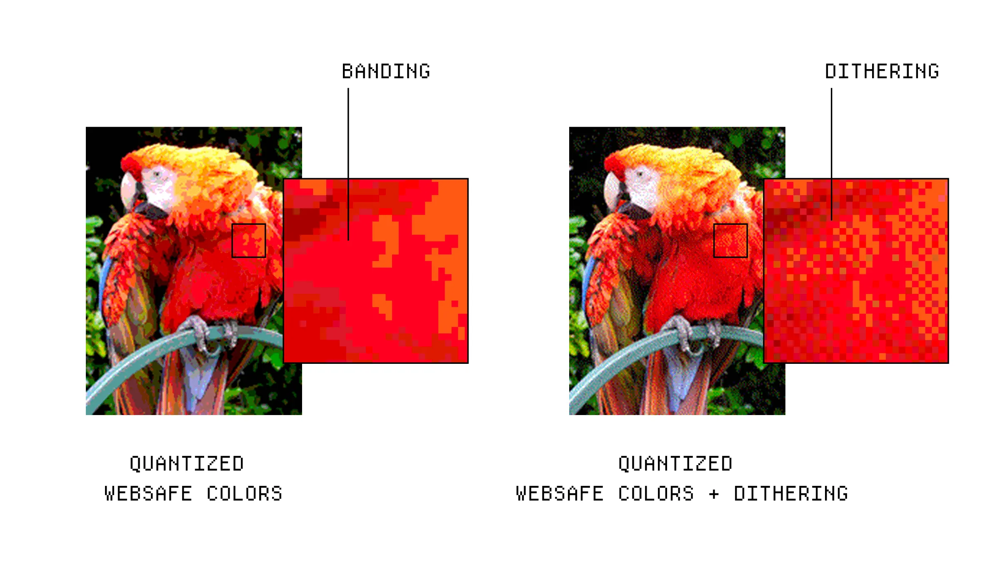
在计算机发展的早期，内存非常稀缺，我们无法存储丰富的色彩细节。为了解决这个问题，我们使用了带有查找表的有限调色板，或者非常低的颜色位深，来减少图像中的颜色数量，这个过程也叫做Quantization。
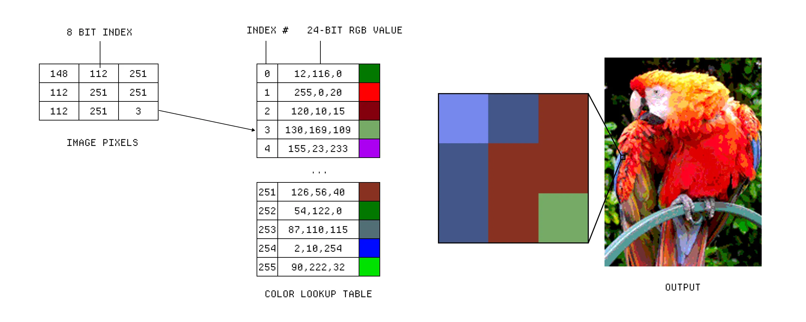
量化的问题在于，它会在本应是平滑渐变的地方产生生硬的色块——因为我们缺少中间过渡的颜色。这时，抖动就派上用场了。我们可以通过用两种相邻颜色添加一些噪点，来近似模拟这种渐变。
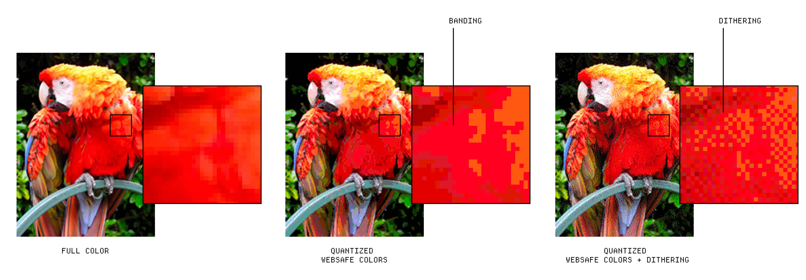
抖动之所以有效，是因为一种叫做空间平均的原理——简单来说，你的眼睛会对一小块区域的色彩进行平均处理。抖动正是利用这一点，欺骗我们的眼睛，在两个色块之间“推断”出一个平滑的过渡，其作用就像一个低通滤波器。
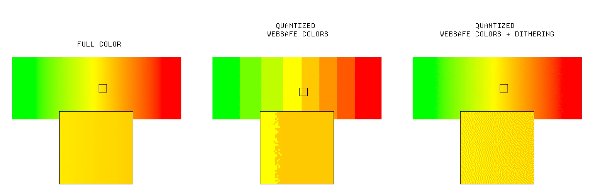
那么，我们如何对图像进行抖动呢？方法有很多，我们先从一个简单的开始：有序抖动。为了简化，我们使用黑白图像为例。我们的目标是仅用黑白两色来重现图像中的灰度层次。
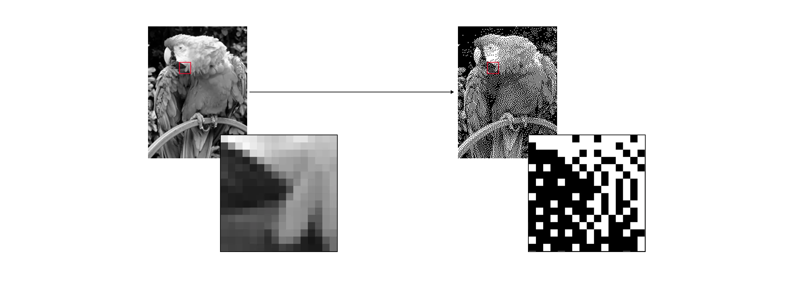
首先，我们创建一个 2x2 的 Bayer 矩阵，其中的数值代表我们处理像素的顺序。然后，我们将这些数值缩放到我们需要的范围，比如 0-255，这样就得到了一个阈值图，我们可以用它来比较每个像素。
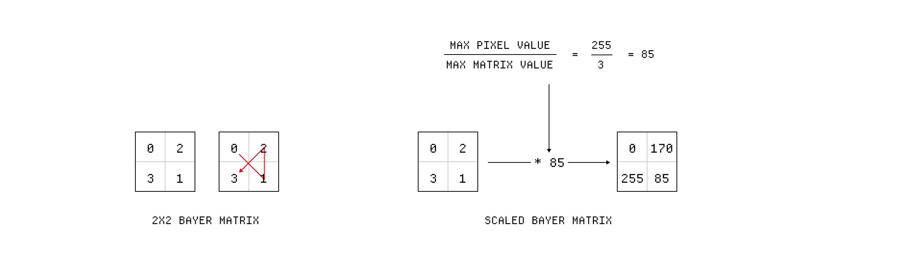
接下来，我们把图像分成一个个 2x2 的像素组，并按照那个奇怪的交叉顺序，将每个像素的值与阈值图中对应位置的值进行比较。如果像素值高于阈值图的值，我们就把它变成白色；如果低于，就变成黑色。
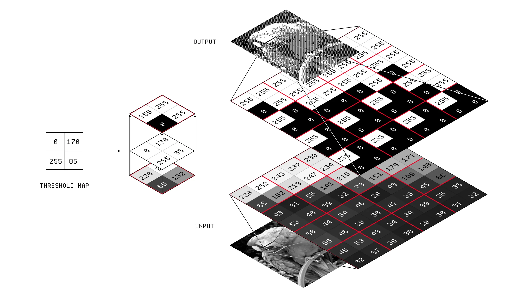
因为我们用的是 2x2 矩阵，每个象限实际上只有 5 种可能的结果，这意味着在纯黑与纯白之间，我们只能表现出 3 种灰度。增大阈值图的尺寸，可以有效增加能表现的灰度层次，从而提升图像的细节水平。
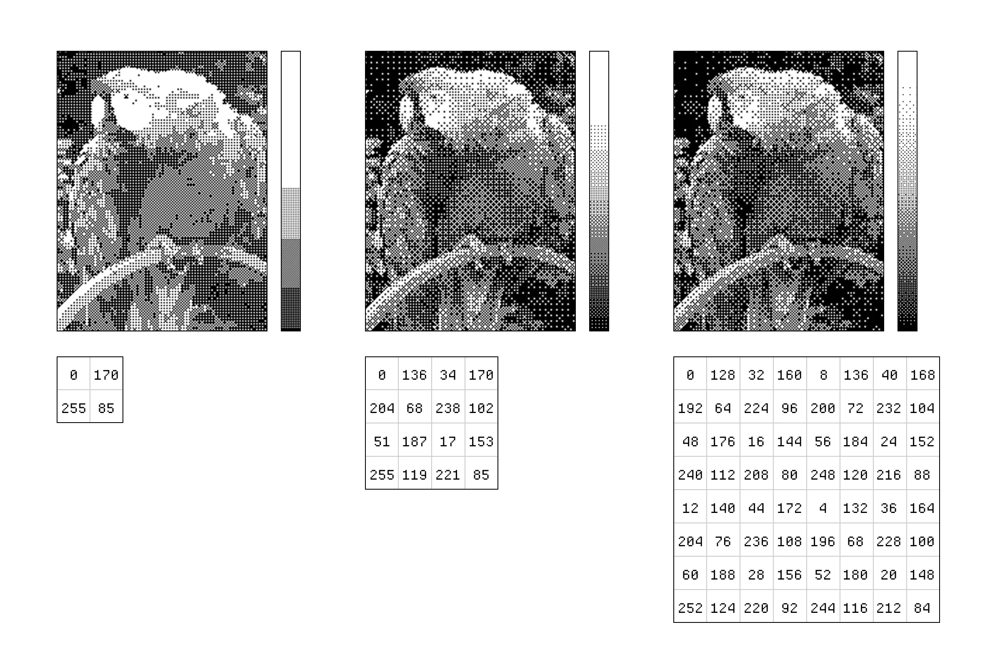
有序抖动的问题在于，它的阈值图会产生比较明显的规律图案。一个更好的方法是误差扩散抖动，特别是其中的 Floyd-Steinberg 算法。
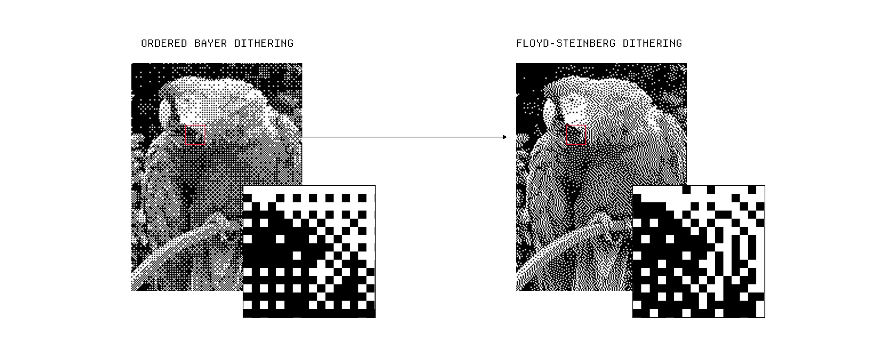
这种方法不再使用阈值图，而是设定一个单一的阈值，比如 128。像之前一样，我们拿每个像素的值与这个阈值进行比较。不同之处在于，这次我们会计算原始像素值与处理后的新像素值之间的差值（称为“误差”），然后将这个误差分配到周围的像素上。
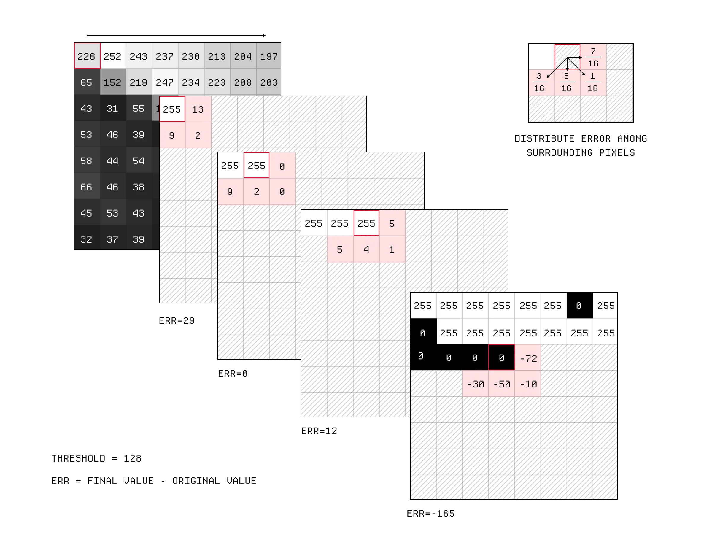
其原理是，如果某个像素比原始图像亮得多，那么就让它的邻近像素变暗一些来作为补偿。我们按照一个权重矩阵，将误差“扩散”到邻近的像素上。这个误差是有正负号的，意味着它可以是正数（变暗补偿）或负数（变亮补偿）。
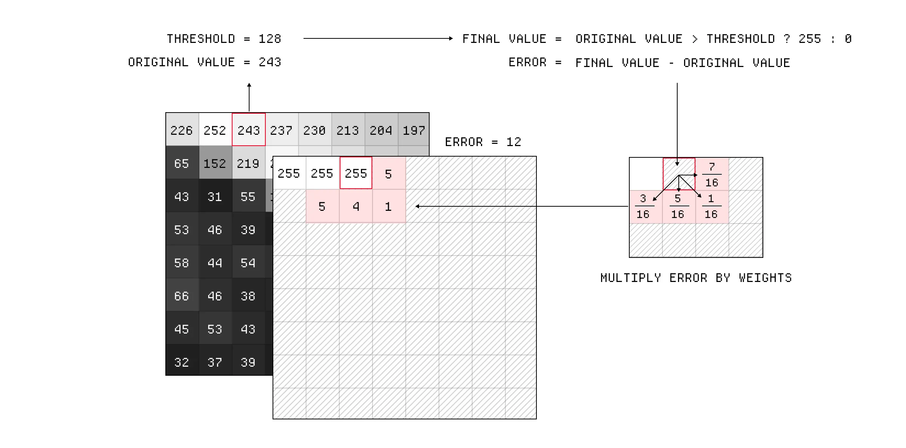
实际上，还有很多其他的抖动算法，但以上两种是最常见的。如今，我们已经不太需要抖动技术了，因为我们拥有了高颜色位深，所以它现在主要作为一种复古美学风格存在。
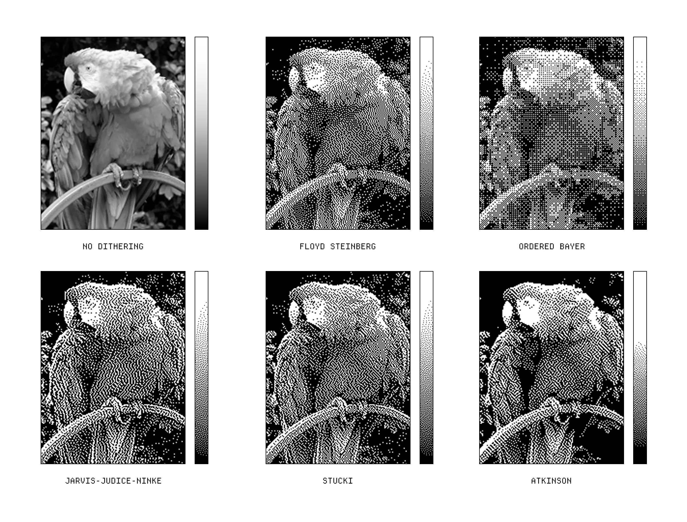